library(tidyverse)
library(here)
source(here("scripts", "preparar-sinasc.R"))
populacao <- read_csv(here("dados", "populacao_ro_2019.csv"),
col_types = cols(cod_municipio = col_character()))
covid <- read_csv(here("dados", "covid_norte_2020_2022.csv"))10 Visualização de dados com ggplot2
Pré-requisitos: Parte II · Pacotes: ggplot2 (carregado com o tidyverse), scales, GGally, here; R base (graphics)
Objetivos de aprendizagem
Ao final deste capítulo, espera-se que o estudante seja capaz de explicar os componentes da gramática dos gráficos (dados, mapeamentos estéticos, geometrias, escalas, facetas e temas); construir gráficos de barras, histogramas, boxplots, gráficos de dispersão e de linhas; escolher o gráfico adequado ao tipo das variáveis e à pergunta; ajustar títulos, rótulos, escalas e cores; representar séries temporais, curvas epidêmicas e pirâmides etárias; salvar gráficos em arquivo; e produzir os gráficos equivalentes no R base, incluindo o diagrama circular e a matriz de dispersão.
Um bom gráfico mostra em segundos o que uma tabela levaria minutos para revelar. Mas um gráfico mal escolhido pode esconder o que importa ou sugerir conclusões que os dados não sustentam. Este capítulo apresenta o ggplot2, o pacote de gráficos do tidyverse, e discute como escolher e ajustar gráficos para explorar dados e para comunicar resultados. Usaremos as três bases já conhecidas: os nascidos vivos, a população e os casos de COVID-19 da Região Norte.
10.1 Por que visualizar dados
Gráficos servem a dois propósitos diferentes. Na exploração, quem analisa usa gráficos rápidos, sem muito acabamento, para conhecer os dados, encontrar erros e formular perguntas. Na comunicação, os gráficos são feitos para outras pessoas e precisam de títulos claros, rótulos legíveis e uma mensagem principal evidente. O ggplot2 serve aos dois propósitos: o mesmo código que gera um gráfico exploratório pode ser refinado, camada por camada, até virar uma figura de relatório.
Um exemplo clássico mostra por que não basta olhar os números resumo. O R traz, entre seus dados de exemplo, o quarteto de Anscombe: quatro pares de variáveis com praticamente a mesma média, a mesma variância e a mesma correlação.
anscombe_longo <- tibble(
conjunto = rep(1:4, each = 11),
x = c(anscombe$x1, anscombe$x2, anscombe$x3, anscombe$x4),
y = c(anscombe$y1, anscombe$y2, anscombe$y3, anscombe$y4)
)
anscombe_longo |>
group_by(conjunto) |>
summarise(media_y = mean(y), dp_y = sd(y), correlacao = cor(x, y))
#> # A tibble: 4 × 4
#> conjunto media_y dp_y correlacao
#> <int> <dbl> <dbl> <dbl>
#> 1 1 7.50 2.03 0.816
#> 2 2 7.50 2.03 0.816
#> 3 3 7.5 2.03 0.816
#> 4 4 7.50 2.03 0.817Pelas medidas resumo, os quatro conjuntos seriam idênticos. O gráfico conta outra história.
ggplot(anscombe_longo, aes(x = x, y = y)) +
geom_point() +
facet_wrap(~ conjunto)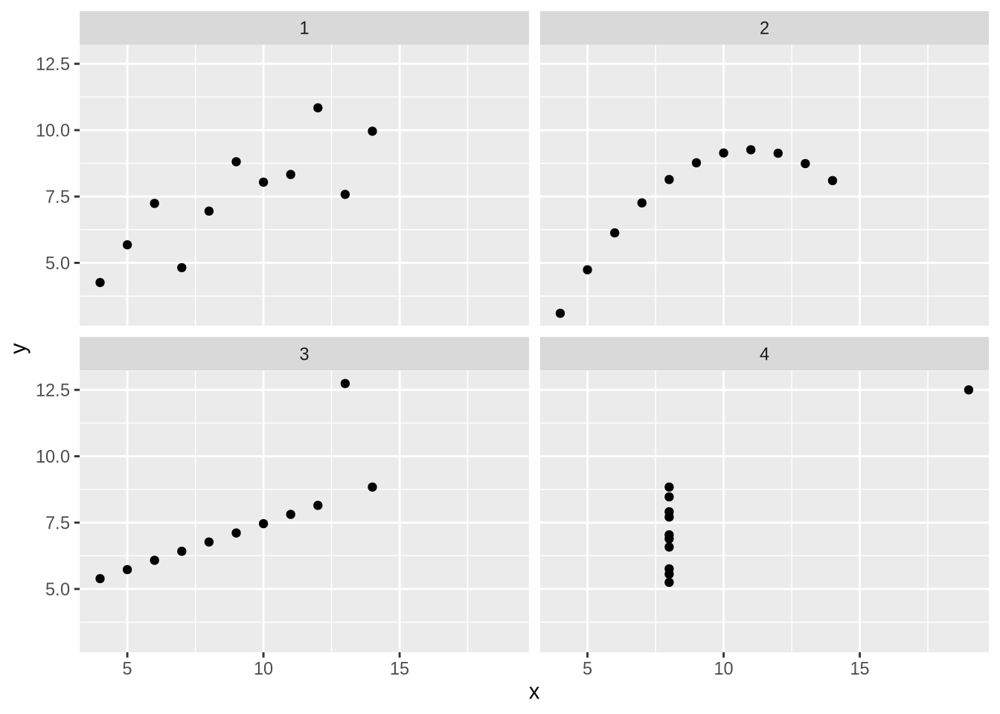
Só o primeiro conjunto tem a relação linear que as medidas sugerem. No segundo, a relação é curva; no terceiro, um único ponto discrepante altera tudo; no quarto, a correlação depende de um só ponto. A lição é simples: olhe sempre os dados antes de resumi-los.
10.2 A gramática dos gráficos
O ggplot2 se baseia na ideia de uma gramática dos gráficos. Todo gráfico é composto pelos mesmos elementos: os dados; os mapeamentos estéticos, que dizem qual variável vai para cada atributo visual (posição no eixo x, posição no eixo y, cor, tamanho, forma); e as geometrias, que dizem que tipo de marca será desenhada (pontos, barras, linhas). A esses elementos se somam escalas, facetas, coordenadas e temas.
O código de um gráfico segue sempre o mesmo modelo. A função ggplot() recebe os dados e, dentro de aes(), os mapeamentos. Em seguida, acrescentamos camadas com o sinal +, a primeira delas sendo uma geometria, cujas funções começam com geom_.
ggplot(nascidos, aes(x = semagestac, y = peso)) +
geom_point()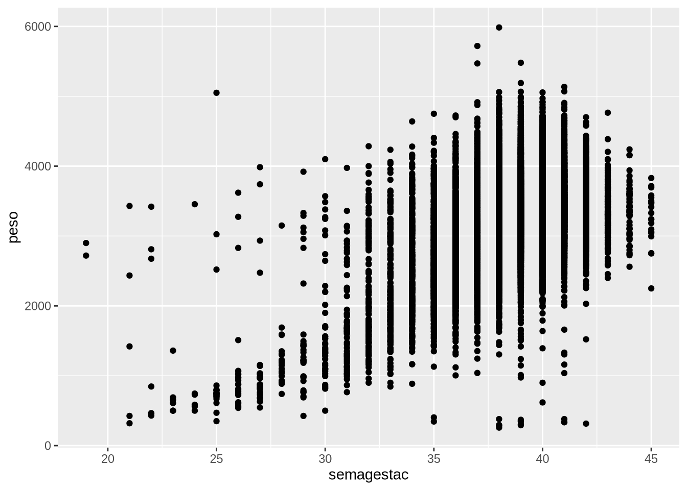
O R avisou que algumas linhas foram removidas: são os registros sem idade gestacional, que não podem ser posicionados no gráfico. Repare que o + substitui o |> dentro do ggplot2, porque cada camada é acrescentada ao gráfico, e não aplicada aos dados.
Há uma diferença importante entre mapear um atributo a uma variável e fixar um atributo em um valor. Quando a cor aparece dentro de aes(), ela representa uma variável, e o ggplot2 cria uma legenda. Quando aparece fora, é apenas uma escolha estética para todos os elementos.
# cor mapeada a uma variável: cada tipo de parto com uma cor
ggplot(nascidos, aes(x = semagestac, y = peso, color = parto)) + geom_point()
# cor fixa: todos os pontos em azul, com transparência
ggplot(nascidos, aes(x = semagestac, y = peso)) + geom_point(color = "steelblue", alpha = 0.3)10.3 Distribuição de uma variável
A escolha do gráfico depende do tipo da variável. Para variáveis categóricas, o gráfico de barras mostra quantas observações há em cada categoria. A função geom_bar() faz a contagem sozinha.
ggplot(nascidos, aes(x = escmae)) +
geom_bar()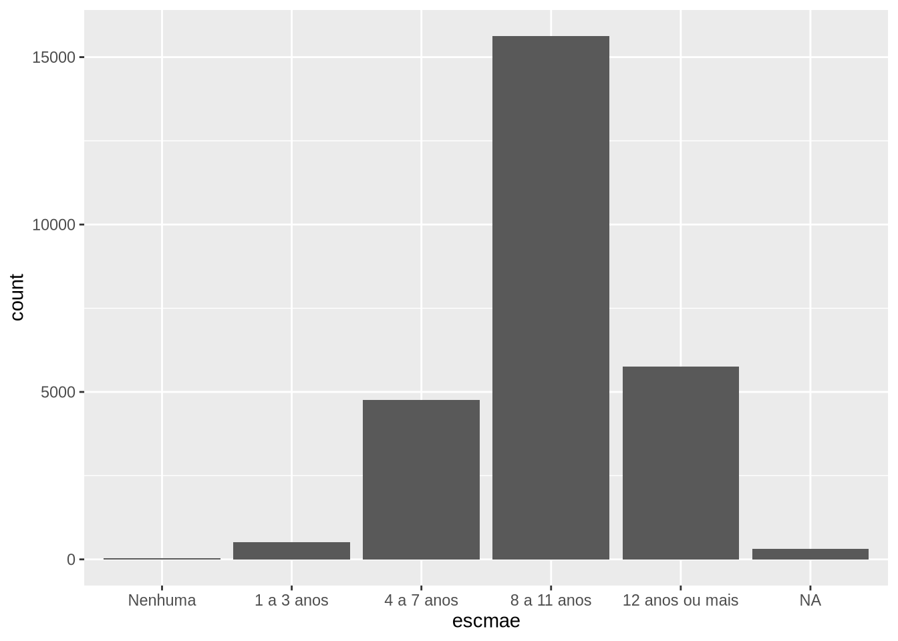
Quando as contagens já foram calculadas, como acontece com tabelas agregadas, usamos geom_col(), informando a altura das barras no eixo y.
nascidos |>
count(escmae) |>
ggplot(aes(x = escmae, y = n)) +
geom_col()Para variáveis numéricas, o histograma divide os valores em intervalos e mostra quantas observações caem em cada um. A largura dos intervalos (binwidth) muda bastante a aparência do gráfico e deve ser escolhida com cuidado.
ggplot(nascidos, aes(x = peso)) +
geom_histogram(binwidth = 100) +
geom_vline(xintercept = 2500, linetype = "dashed")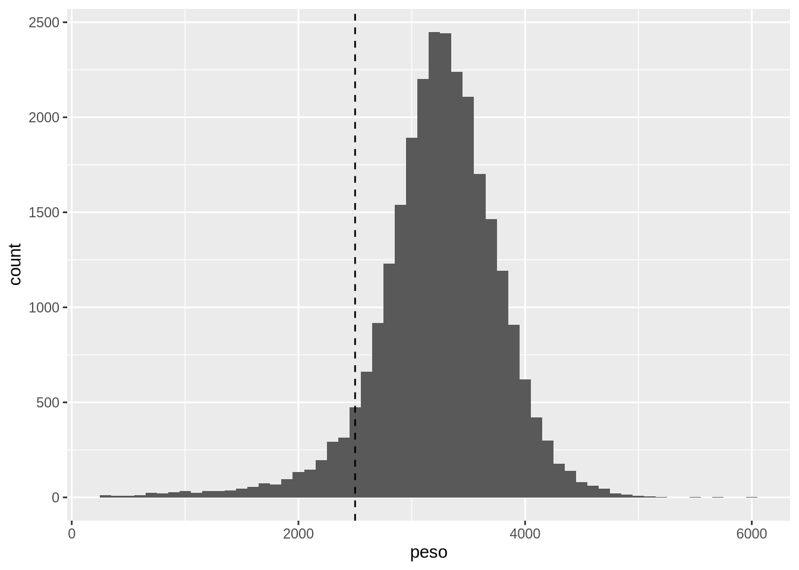
A linha tracejada, acrescentada com geom_vline(), marca o ponto de corte do baixo peso. A distribuição é aproximadamente simétrica, com uma cauda mais longa à esquerda, formada pelos recém-nascidos prematuros e de baixo peso.
O boxplot resume uma variável numérica em cinco números: a mediana (linha central), o primeiro e o terceiro quartis (limites da caixa) e os limites das hastes, que vão até o valor mais extremo situado a no máximo 1,5 vez a distância interquartil da caixa. Os pontos além das hastes são marcados individualmente. O boxplot é mais útil para comparar grupos, como na próxima seção.
10.4 Relações entre variáveis
Uma variável numérica e uma categórica
Para comparar a distribuição de uma variável numérica entre grupos, o boxplot é a escolha mais comum.
nascidos |>
filter(!is.na(gestacao)) |>
mutate(gestacao = fct_relevel(gestacao, "22 a 27 semanas", "28 a 31 semanas",
"32 a 36 semanas", "37 a 41 semanas",
"42 semanas e mais")) |>
ggplot(aes(x = gestacao, y = peso)) +
geom_boxplot()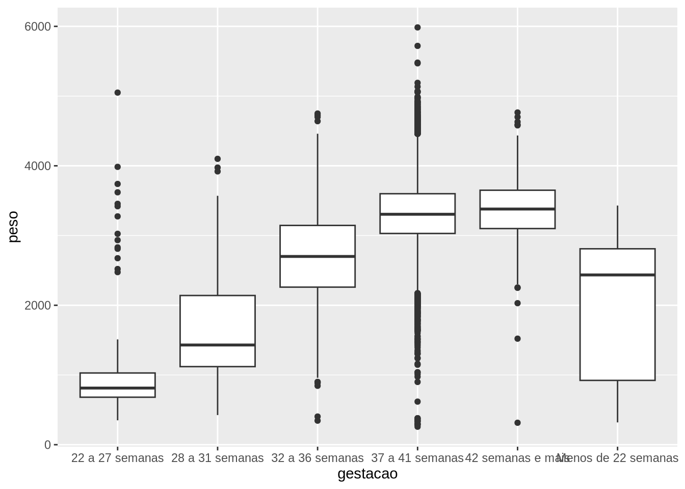
Duas variáveis numéricas
Para duas variáveis numéricas, o gráfico de dispersão é a escolha natural. Com muitos pontos, como aqui, eles se sobrepõem. Duas soluções ajudam: deslocar os pontos aleatoriamente um pouco (geom_jitter()), útil quando uma das variáveis assume poucos valores, como as semanas de gestação, e usar transparência (alpha).
ggplot(nascidos, aes(x = semagestac, y = peso)) +
geom_jitter(alpha = 0.1, width = 0.3) +
geom_smooth()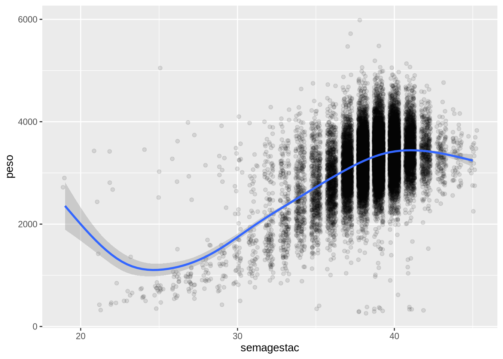
A função geom_smooth() acrescenta uma curva de tendência, que mostra que o peso cresce rapidamente com a idade gestacional até cerca de 38 semanas e depois se estabiliza.
Duas variáveis categóricas
Para duas variáveis categóricas, usamos barras agrupadas ou empilhadas, definidas pelo argumento position. Barras empilhadas com position = "fill" mostram proporções dentro de cada categoria, o que facilita comparar grupos de tamanhos diferentes.
nascidos |>
filter(!is.na(escmae), !is.na(parto)) |>
ggplot(aes(x = escmae, fill = parto)) +
geom_bar(position = "fill")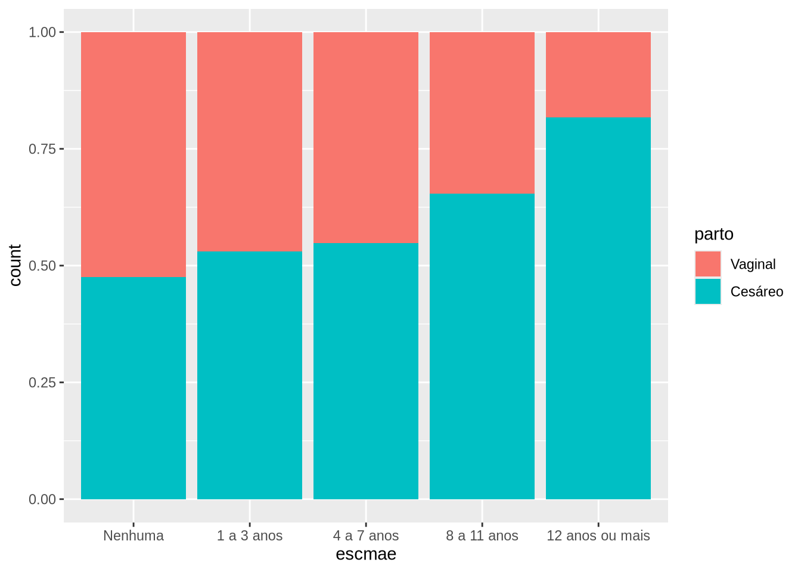
O gráfico mostra o que a tabela do Capítulo 7 já indicava: a proporção de partos cesáreos cresce com a escolaridade da mãe.
10.5 Séries temporais e curvas epidêmicas
Para dados que variam no tempo, o gráfico de linhas (geom_line()) é o mais adequado. Quando o eixo x é uma data, a função scale_x_date() controla os intervalos e o formato das marcas.
Na vigilância epidemiológica, a curva epidêmica mostra o número de casos por unidade de tempo, em geral por semana epidemiológica, e costuma ser desenhada com colunas. Vamos construir a curva da COVID-19 em Rondônia, a partir da agregação semanal feita no Capítulo 9.
covid_semanal <- covid |>
mutate(semana = floor_date(data, unit = "week", week_start = 7)) |>
group_by(uf, semana) |>
summarise(casos = sum(casos_novos), obitos = sum(obitos_novos), .groups = "drop")covid_semanal |>
filter(uf == "RO") |>
ggplot(aes(x = semana, y = casos)) +
geom_col(fill = "#b5401f") +
scale_x_date(date_breaks = "3 months", date_labels = "%m/%Y") +
labs(x = "Semana epidemiológica (início)", y = "Casos notificados")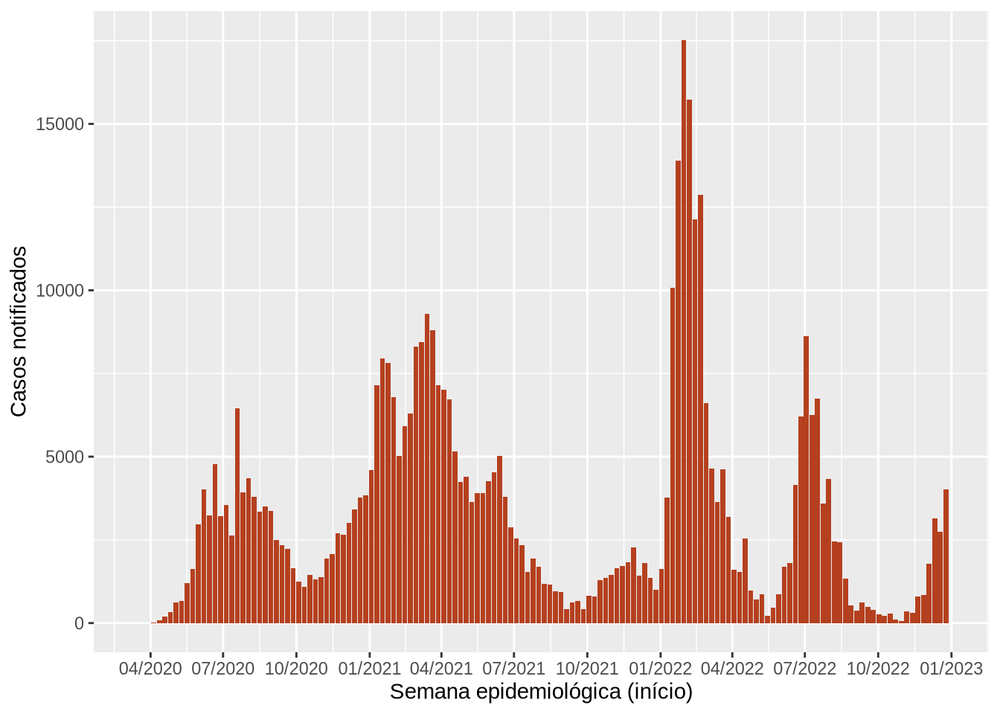
A curva mostra várias ondas: a primeira em meados de 2020, a segunda no início de 2021, a maior delas, em número de casos, no início de 2022, e uma quarta, menor, em meados de 2022. A função labs() define os títulos dos eixos.
10.6 Facetas
Para comparar a mesma relação em vários grupos, podemos dividir o gráfico em painéis com facet_wrap(). Cada painel mostra um subconjunto dos dados, com os mesmos eixos, o que facilita a comparação.
covid_semanal |>
ggplot(aes(x = semana, y = obitos)) +
geom_line() +
facet_wrap(~ uf, ncol = 2, scales = "free_y") +
labs(x = NULL, y = "Óbitos por semana")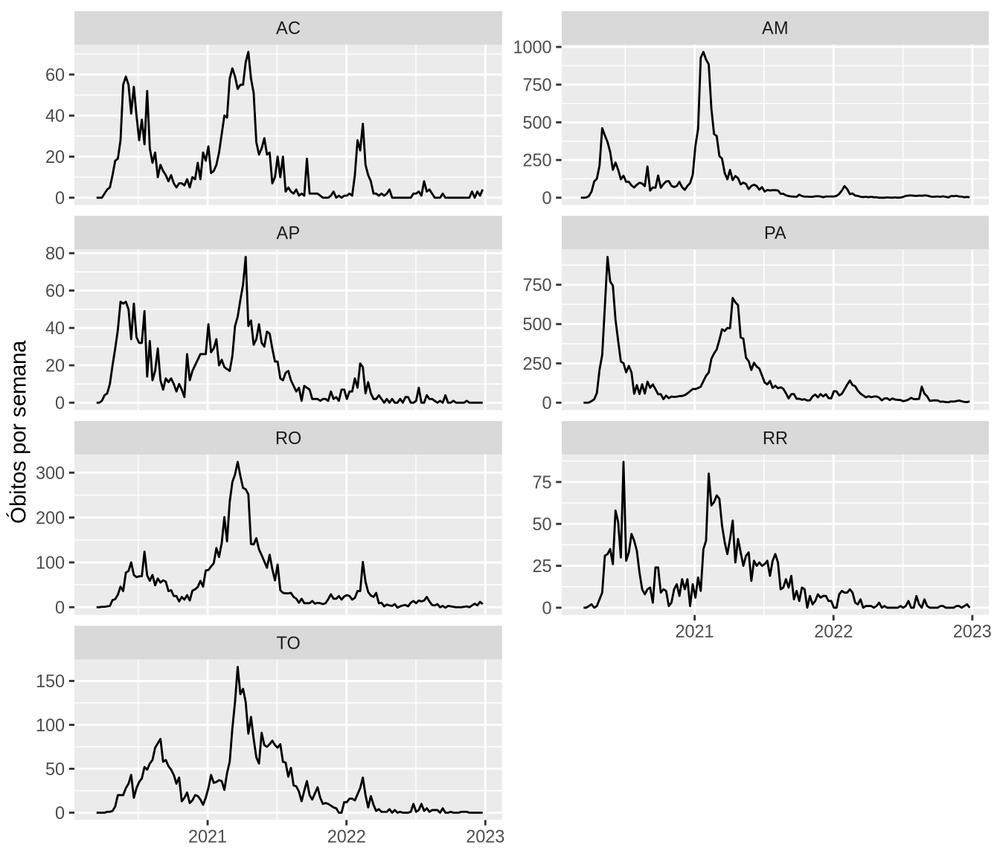
O argumento scales = "free_y" permite que cada painel tenha sua própria escala vertical. Isso facilita ver o formato da curva em cada estado, mas exige cuidado na leitura, porque a mesma altura representa números diferentes em cada painel. O Amazonas destaca-se pelo pico de óbitos no início de 2021, período do colapso do sistema de saúde em Manaus. A função facet_grid() organiza os painéis em linhas e colunas definidas por duas variáveis.
10.7 Escalas, rótulos e temas
Um gráfico para comunicação precisa de títulos claros, eixos com unidades e números no formato do leitor. A função labs() define título, subtítulo, títulos dos eixos e da legenda e a fonte dos dados. As funções scale_*() controlam como cada mapeamento é desenhado, e o pacote scales oferece funções para formatar números nos eixos, inclusive com a vírgula decimal e o ponto de milhar usados no Brasil.
As cores merecem atenção especial. Uma parcela relevante da população masculina, em torno de 8% entre homens de ascendência europeia, tem alguma forma de daltonismo, e combinações como vermelho e verde podem ficar indistinguíveis para eles. As paletas da família viridis, disponíveis em scale_fill_viridis_d() e scale_color_viridis_d(), foram desenhadas para serem distinguíveis por pessoas com daltonismo e também quando impressas em tons de cinza.
Por fim, os temas controlam a aparência geral do gráfico (fundo, grades, fontes). O ggplot2 traz vários temas prontos, como theme_minimal() e theme_bw(), e a função theme() ajusta detalhes.
nascidos |>
filter(!is.na(escmae), !is.na(parto)) |>
group_by(escmae) |>
summarise(prop_cesareo = mean(parto == "Cesáreo")) |>
ggplot(aes(x = prop_cesareo, y = escmae)) +
geom_col(fill = "#ff6347") +
geom_text(aes(label = scales::label_percent(accuracy = 0.1, decimal.mark = ",")(prop_cesareo)),
hjust = -0.1, size = 3.5) +
scale_x_continuous(labels = scales::label_percent(decimal.mark = ","),
limits = c(0, 1), expand = expansion(mult = c(0, 0.05))) +
labs(
title = "Cesarianas aumentam com a escolaridade materna",
x = "Proporção de partos cesáreos",
y = "Escolaridade da mãe",
caption = "Fonte: SINASC/Ministério da Saúde."
) +
theme_minimal()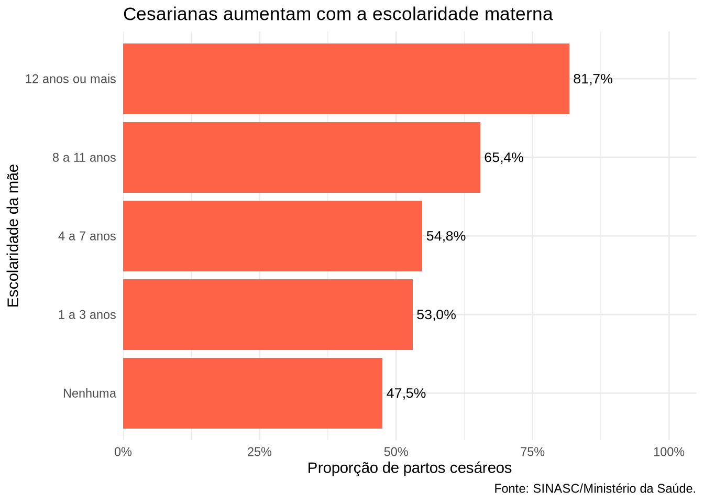
Vale observar algumas escolhas desse gráfico. O título apresenta a mensagem principal, e não apenas o assunto. As barras horizontais deixam os rótulos das categorias legíveis. O eixo começa no zero, o que é obrigatório em gráficos de barras, porque o leitor compara os comprimentos. Os percentuais escritos ao lado das barras dispensam a consulta ao eixo. E a fonte dos dados aparece no rodapé.
10.8 Pirâmide etária
A pirâmide etária mostra a distribuição da população por sexo e faixa etária. No ggplot2, ela é um gráfico de colunas horizontais em que a população de um dos sexos recebe sinal negativo, para ficar do lado esquerdo do eixo.
ordem_faixas <- unique(populacao$faixa_etaria)
populacao |>
group_by(sexo, faixa_etaria) |>
summarise(populacao = sum(populacao), .groups = "drop") |>
mutate(
faixa_etaria = factor(faixa_etaria, levels = ordem_faixas),
populacao_grafico = if_else(sexo == "Masculino", -populacao, populacao)
) |>
ggplot(aes(x = populacao_grafico, y = faixa_etaria, fill = sexo)) +
geom_col() +
scale_x_continuous(labels = \(x) scales::label_number(big.mark = ".")(abs(x))) +
scale_fill_manual(values = c(Feminino = "#ff6347", Masculino = "#1f6f8b")) +
labs(x = "População", y = NULL, fill = NULL) +
theme_minimal() +
theme(legend.position = "top")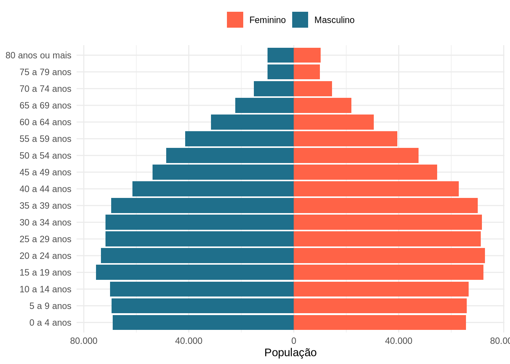
O truque está na escala do eixo x, que mostra os valores absolutos (abs()), para que a população masculina não apareça com sinal negativo. A pirâmide de Rondônia tem base larga e topo estreito, típica de uma população ainda jovem, mas com sinais de envelhecimento, já que as faixas de 0 a 14 anos não são mais as maiores.
10.9 Gráficos no R base
O R tem, desde sua origem, funções próprias para gráficos, reunidas no pacote graphics. Elas são mais simples de usar para gráficos rápidos de exploração, embora sejam menos flexíveis que o ggplot2. As principais são hist(), boxplot(), barplot(), plot(), pie() e pairs().
par(mfrow = c(2, 2))
hist(nascidos$peso, main = "Peso ao nascer", xlab = "Gramas")
boxplot(peso ~ parto, data = nascidos, main = "Peso por tipo de parto", xlab = "", ylab = "Gramas")
barplot(table(nascidos$sexo), main = "Nascimentos por sexo")
pie(table(nascidos$parto), main = "Tipo de parto")
par(mfrow = c(1, 1))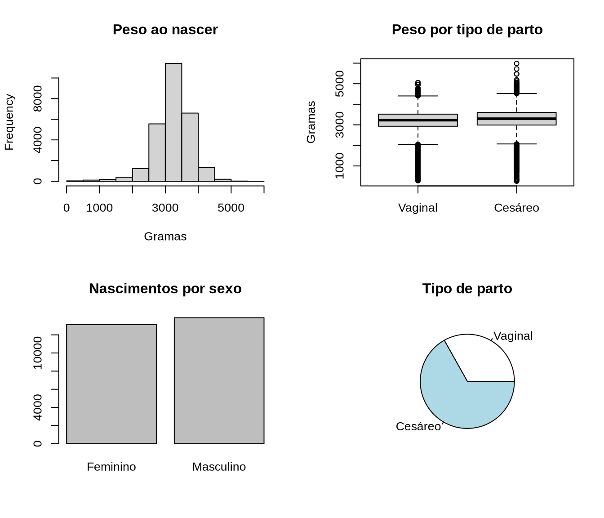
A função par(mfrow = c(2, 2)) divide a área do gráfico em uma grade de duas linhas e duas colunas, e a última linha volta à configuração original.
O diagrama circular (gráfico de pizza), feito com pie(), aparece com frequência em relatórios, e por isso vale uma discussão. Comparar ângulos e áreas é mais difícil para o olho humano do que comparar comprimentos. Com duas ou três categorias bem diferentes, como no exemplo, o gráfico funciona. Com muitas categorias, ou com proporções próximas, as fatias ficam difíceis de comparar, e um gráfico de barras costuma transmitir a mesma informação de forma mais precisa.
A matriz de dispersão mostra os gráficos de dispersão de todos os pares de um conjunto de variáveis numéricas, e é uma ferramenta útil de exploração. No R base, ela é feita com pairs(); o pacote GGally oferece uma versão no estilo do ggplot2, com ggpairs(), que acrescenta as distribuições e as correlações.
set.seed(2019)
nascidos |>
drop_na(peso, semagestac, idademae) |>
slice_sample(n = 1000) |>
select(peso, semagestac, idademae) |>
GGally::ggpairs()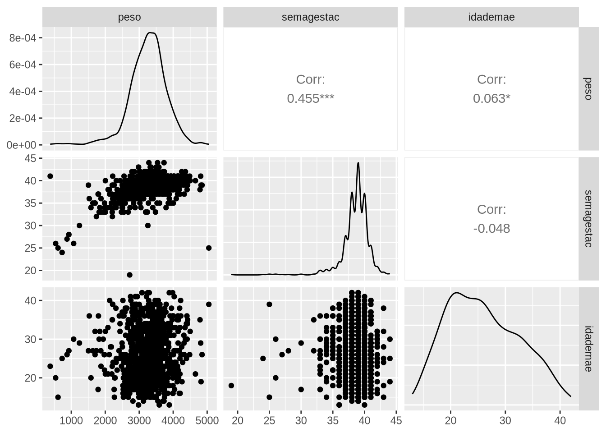
Usamos uma amostra aleatória de mil nascimentos, obtida com slice_sample(), para que o gráfico fique legível. A função set.seed() fixa o ponto de partida do sorteio, para que a mesma amostra seja obtida sempre que o código for executado.
10.10 Salvando gráficos
A função ggsave() grava o último gráfico criado, ou um gráfico guardado em um objeto, em um arquivo. O formato é definido pela extensão do nome do arquivo, e as dimensões, em polegadas ou centímetros, pelos argumentos width, height e units. Para relatórios e artigos, recomenda-se resolução de pelo menos 300 pontos por polegada (dpi).
grafico <- ggplot(nascidos, aes(x = peso)) + geom_histogram(binwidth = 100)
ggsave(here("resultados", "figuras", "histograma_peso.png"), plot = grafico,
width = 16, height = 10, units = "cm", dpi = 300)Em documentos Quarto, não é preciso salvar os gráficos: eles são gerados e inseridos automaticamente, como vimos no Capítulo 4.
10.11 Estudo de caso: um painel sobre o baixo peso ao nascer
Vamos construir um gráfico para um relatório sobre baixo peso ao nascer em Rondônia, mostrando a proporção de baixo peso nos 15 municípios com mais nascimentos, ordenados do maior para o menor valor, com uma linha de referência para o estado.
proporcao_estado <- mean(nascidos$baixo_peso)
nascidos |>
group_by(munresnome) |>
summarise(nascidos_vivos = n(), prop_baixo_peso = mean(baixo_peso)) |>
slice_max(nascidos_vivos, n = 15) |>
mutate(munresnome = fct_reorder(munresnome, prop_baixo_peso)) |>
ggplot(aes(x = prop_baixo_peso, y = munresnome)) +
geom_vline(xintercept = proporcao_estado, linetype = "dashed", color = "grey50") +
geom_segment(aes(x = 0, xend = prop_baixo_peso, yend = munresnome), color = "grey80") +
geom_point(aes(size = nascidos_vivos), color = "#b5401f") +
scale_x_continuous(labels = scales::label_percent(decimal.mark = ","), limits = c(0, NA)) +
labs(
x = "Proporção de baixo peso ao nascer",
y = NULL,
size = "Nascidos vivos",
caption = "Linha tracejada: proporção do estado. Fonte: SINASC/Ministério da Saúde."
) +
theme_minimal()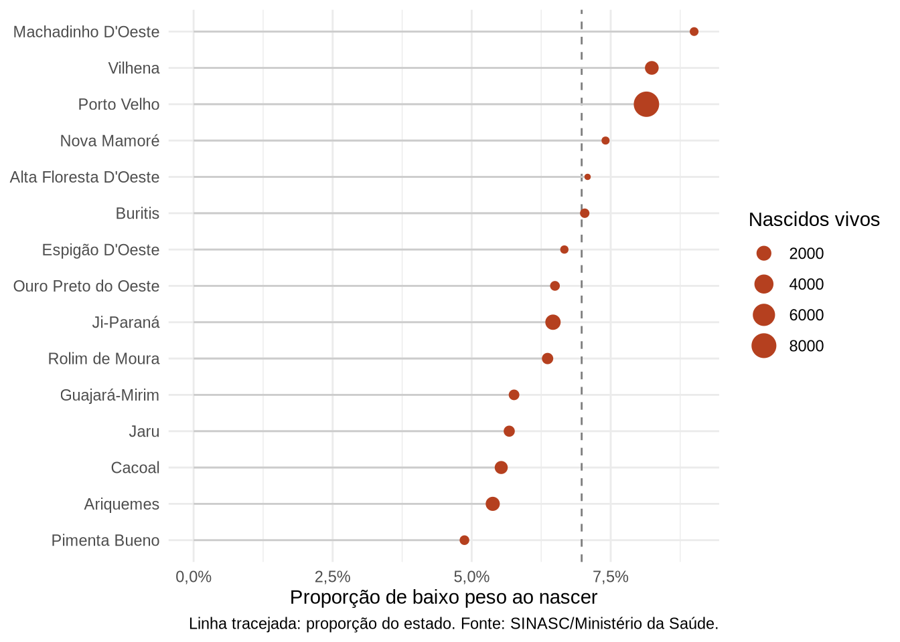
Três recursos tornam o gráfico mais informativo. A função fct_reorder(), vista no Capítulo 9, ordena os municípios pelo indicador, o que facilita a leitura. O tamanho dos pontos indica o número de nascidos vivos, lembrando ao leitor que os municípios menores têm estimativas menos estáveis. E a linha tracejada mostra a referência estadual, que permite ver rapidamente quais municípios estão acima ou abaixo da média do estado.
10.12 Exercícios
Fixação
Faça um histograma da idade da mãe, testando larguras de intervalo de 1, 2 e 5 anos. Qual delas representa melhor a distribuição?
Construa um gráfico de barras com o número de nascimentos por mês de 2019, com os meses na ordem do calendário.
Faça boxplots do peso ao nascer segundo a faixa de idade da mãe e descreva o que eles mostram.
Refaça o gráfico de barras do tipo de parto segundo a escolaridade usando
position = "dodge"em vez deposition = "fill". Que informação cada versão destaca?
Aplicação
Construa a curva epidêmica semanal de casos de COVID-19 no Amazonas, com título, rótulos dos eixos com separador de milhar e a fonte dos dados.
Compare, em um gráfico com facetas, a distribuição do peso ao nascer segundo o número de consultas de pré-natal.
Desafio
Construa a pirâmide etária de Porto Velho e a de um município pequeno, como Pimenteiras do Oeste, lado a lado, usando proporções em vez de números absolutos. Por que as proporções são necessárias para comparar os dois municípios?
Encontre na galeria de gráficos do R (https://r-graph-gallery.com/) um tipo de gráfico que não foi apresentado neste capítulo e que seja adequado a algum dado de saúde. Reproduza-o com a base de nascidos vivos ou com a de COVID-19 e explique quando ele é preferível às alternativas vistas aqui.
10.13 Síntese
O ggplot2 constrói gráficos em camadas: dados, mapeamentos estéticos definidos em aes() e geometrias (geom_*()), complementados por escalas, facetas, rótulos e temas. A escolha do gráfico depende das variáveis: barras para uma variável categórica, histograma e boxplot para uma numérica, boxplots por grupo para uma numérica e uma categórica, dispersão para duas numéricas, barras empilhadas ou agrupadas para duas categóricas e linhas ou colunas para séries temporais. Gráficos para comunicação precisam de títulos que transmitam a mensagem, eixos rotulados, números no formato do leitor, cores acessíveis e indicação da fonte. As funções do R base, como hist(), boxplot(), pie() e pairs(), continuam úteis para explorações rápidas.
| Função | Pacote | Finalidade |
|---|---|---|
ggplot(), aes() |
ggplot2 | Iniciar o gráfico e mapear variáveis |
geom_bar(), geom_col() |
ggplot2 | Gráficos de barras |
geom_histogram(), geom_boxplot() |
ggplot2 | Distribuições de variáveis numéricas |
geom_point(), geom_jitter(), geom_smooth() |
ggplot2 | Relações entre variáveis numéricas |
geom_line(), scale_x_date() |
ggplot2 | Séries temporais |
geom_vline(), geom_segment(), geom_text() |
ggplot2 | Linhas de referência, segmentos e textos |
facet_wrap(), facet_grid() |
ggplot2 | Painéis por subgrupo |
labs(), scale_*(), theme_minimal(), theme() |
ggplot2 | Rótulos, escalas e temas |
label_number(), label_percent() |
scales | Formatar números nos eixos |
ggsave() |
ggplot2 | Salvar gráficos |
hist(), boxplot(), barplot(), pie(), pairs(), plot() |
graphics, base | Gráficos do R base |
ggpairs() |
GGally | Matriz de dispersão |
slice_sample(), set.seed() |
dplyr, base | Amostra aleatória reprodutível |
10.14 Para saber mais
O capítulo 1 do R para Ciência de Dados (WICKHAM; ÇETINKAYA-RUNDEL; GROLEMUND, 2023) é uma introdução ao ggplot2 muito bem construída, e os capítulos 9 e 11 aprofundam as camadas e a comunicação com gráficos. O Manual de R para Epidemiologistas (BATRA et al., 2021) traz, além do básico do ggplot2 (capítulos 30 e 31), capítulos específicos sobre curvas epidêmicas (32) e pirâmides etárias (33), com recursos que vão além dos apresentados aqui. Faria (FARIA, 2024) trata do ggplot2 nos capítulos 8 e 9, com muitos detalhes sobre a personalização dos gráficos. O livro de receitas de CHANG (2018), da bibliografia da disciplina, e a galeria de gráficos do R (HOLTZ, [s.d.]) são ótimas fontes de inspiração e de código pronto para adaptar.
| Obra | Capítulo | Seções de interesse |
|---|---|---|
| R para Ciência de Dados (WICKHAM; ÇETINKAYA-RUNDEL; GROLEMUND, 2023) | 1. Visualização de dados; 9. Camadas; 11. Comunicação | Visualizando distribuições; Visualizando relações; Facetas; Rótulos; Escalas; Temas |
| Manual de R para Epidemiologistas (BATRA et al., 2021) | 30. O básico do ggplot; 31. Dicas do ggplot; 32. Curvas epidêmicas; 33. Pirâmides demográficas e escalas Likert | Mapeando dados ao gráfico; Facetas; Eixos de tempo |
| Introdução à Linguagem R (FARIA, 2024) | 8. Visualização de dados com ggplot2; 9. Configurando componentes estéticos do gráfico no ggplot2 |
— |
| Practical Statistics in Medicine with R (BOUGIOUKAS, 2025) | 11. Data visualization with ggplot2 | — |
| R Graphics Cookbook (CHANG, 2018) | — | Receitas por tipo de gráfico |